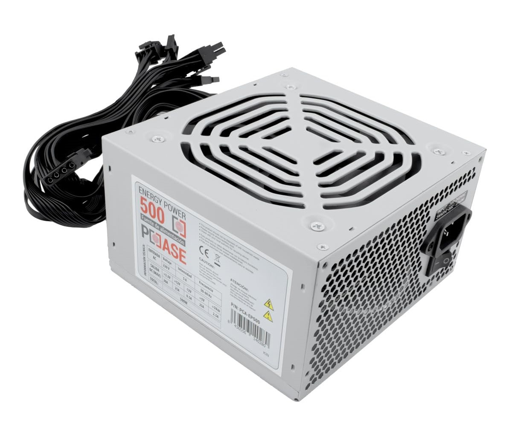

Fuente de alimentación

En electrónica, la fuente de alimentación o fuente de potencia es el
dispositivo que convierte la corriente alterna (CA), en una o varias
corrientes continuas (CC), que alimentan los distintos circuitos del
aparato electrónico al que se conecta (computadora, televisor,
impresora, router, etc).[1]
En inglés se conoce como power supply unit (PSU), que literalmente
traducido significa: unidad de fuente de alimentación, refiriéndose
a la fuente de energía eléctrica
Las fuentes de alimentación para dispositivos electrónicos, pueden
clasificarse básicamente como fuentes de alimentación lineales y
conmutadas.[2] Las lineales tienen un diseño relativamente simple,
que puede llegar a ser más complejo cuanto mayor es la corriente
que deben suministrar, sin embargo su regulación de tensión es
poco eficiente. Una fuente conmutada, de la misma potencia que una
lineal, será más pequeña y normalmente más eficiente pero será
más compleja y por tanto más susceptible a averías.